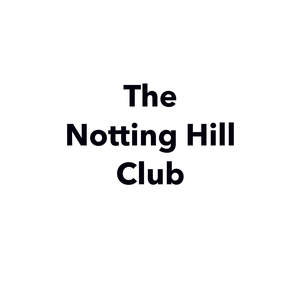

Trade Mark Journal No.2025/014 4 April 2025
UK00004174437 16 March 2025 (25)

- Class 25
- T-shirts; Short-sleeved T-shirts; Shirts; Turtleneck shirts; Printed t-shirts; Dress shirts; Long-sleeved shirts; Short-sleeve shirts; Short-sleeved shirts; Tee-shirts; Knit shirts; Corduroy shirts; Mock turtleneck shirts; Aloha shirts; Camouflage shirts; Sweat shirts; Open-necked shirts; Button- front aloha shirts; Yoga shirts; Bib shorts; Polo shirts; Casual shirts; Collared shirts; Hooded sweat shirts; Maternity shirts; Ramie shirts; Shirts for suits; Sleeveless jerseys; Golf shirts; Pique shirts; Jeans; Shorts [clothing]; Fleece shorts; Denim pants; Woven shirts; Sweatpants; Shirts and slips; Shirt fronts; American football shirts; V-neck sweaters; Dress pants; Hoodies; Denim jeans; Leggings [trousers]; Sport shirts; Sports shirts; Bib tights; Nappy pants [clothing]; Boy shorts [underwear]; Trousers shorts; Blue jeans; Men’s dress socks; Shorts; Sports shirts with short sleeves; Wristbands [clothing]; Capri pants; Denims [clothing]; Jerseys [clothing]; Hooded sweatshirts; Pants; Sleeveless jackets; Embroidered clothing; Bibs, sleeved, not of paper; Sleeveless pullovers; Bib overalls for hunting; Sweat shorts; Sleeved jackets; Corduroy pants; Camouflage pants; Turtleneck sweaters; Maternity shorts; Chino pants; Tank-tops; Sweat pants; Button down shirts; Beanie hats; Turtleneck pullovers; Padded shirts for athletic use; Pirate pants; American football pants; American football shorts; Denim jackets; Babies pants [clothing]; Mock turtleneck sweaters; Knitted underwear; Mens underwear; Stuff jackets [clothing]; Tracksuit tops; Headbands for clothing; Headbands [clothing]; Hooded pullovers; Fleece pullovers; Fleece jackets; Fleece vests; Knit jackets; Beanies; Polar fleece jackets; Hooded bathrobes; Camouflage jackets; Mens and womens jackets, coats, trousers, vests; Weatherproof pants; Jogging pants; Vest tops; Hooded tops; Fleece tops; Corduroy trousers; Handwarmers [clothing]; Camouflage vests; Knitted clothing; Jackets [clothing]; Sweaters; Mitts [clothing]; Windproof clothing; Gloves for apparel; Camouflage gloves; Wetsuit gloves; Cashmere clothing; Crew neck sweaters; Mens clothing; Windproof jackets; Leather pants; Fur jackets; Snow pants; Overshirts; Gloves as clothing; Gloves [clothing]; Suede jackets; Pullovers; Sheepskin jackets; Padded jackets; Fur hats; Knitted baby shoes; Woolly hats; Mittens; Knitted gloves; Snowboard mittens; Toques [hats]; Booties; Fascinator hats; Hats; Fake fur hats; Bootees (woollen baby shoes); Cashmere scarves; Ski hats; Cloche hats; Baseball caps and hats; Legwarmers; Caps being headwear; Caps [headwear]; Ushankas [fur hats]; Baby boots; Baseball hats; Sports caps and hats; Earmuffs; Woollen socks; Knitted tops; Cardigans; Headwear; Cowls [clothing]; Baby doll pyjamas; Scarves; Baby bodysuits; Knit tops; Leather headwear; Jumpers [sweaters]; Valenki [felted boots]; Mens socks; Sun hats; Rain hats; Scarfs; Snoods [scarves]; Bonnets [headwear]; Fashion hats; Bucket hats; Fur muffs; Ear warmers being clothes; Neck scarves [mufflers]; Mufflers [neck scarves]; Mufflers as neck scarves; Visors [headwear]; Visors being headwear; Baby layettes for clothing; Headbands; Beach hats; Neck scarves; Woollen tights; Skull caps; Sock suspenders; Bucket caps; Visors [hatmaking]; Head sweatbands; Fur cloaks; Short overcoat for kimono (haori); Clothing; Knitwear [clothing]; Ready-to-wear clothing; Linen clothing; Clothes; Aprons [clothing]; Gabardines [clothing]; Silk clothing; Clothing of leather; Leather clothing; Leather (Clothing of -); Hoods [clothing]; Belts for clothing; Belts [clothing]; Casual clothing; Rainproof clothing; Bandeaux [clothing]; Waterproof clothing; Jackets being sports clothing; Visors [clothing]; Clothing for leisure wear; Ready-made clothing; Bottoms [clothing]; Latex clothing; Trunks being clothing; Playsuits [clothing]; Woven clothing; Infant clothing; Drawers [clothing]; Drawers as clothing; Clothing for sports; Sports clothing; Leisure clothing; Athletic clothing; Ties [clothing]; Clothing for children; Muffs [clothing]; Bodies [clothing]; Clothing for infants; Clothing for babies; Tops [clothing]; Weatherproof clothing; Clothing for cycling; Water-resistant clothing; Fabric belts [clothing]; Pockets for clothing; Clothing for skiing; Beach clothing; Triathlon clothing; Chaps (clothing); Thermal clothing; Fishing clothing; Dance clothing; Braces for clothing; Socks; Socks and stockings; Anklets [socks]; Ankle socks; Footless socks; Trouser socks; Sweat-absorbent socks; Non-slip socks; Anti-perspirant socks; Bed socks; Yoga socks; Thermal socks; Tennis socks; Socks for men; Sports socks; Water socks; Pop socks; Inner socks for footwear; American football socks; Japanese style socks (tabi); Insoles [for shoes and boots]; Insoles for shoes and boots; Knee-high stockings; Slippers; Japanese style socks (tabi covers); Shoes; Socks for infants and toddlers; Esparto shoes or sandles; Tongues for shoes and boots; Sweat-absorbent stockings; Stockings (Sweat-absorbent -); Stockings [sweat- absorbent]; Underwear; Pullstraps for shoes and boots; Stockings; Shoes for leisurewear; Hosiery; Slip-on shoes; Heel pieces for stockings; Stockings (Heel pieces for -); Esparto shoes or sandals; Pedicure slippers; Waterproof shoes; Sandals and beach shoes; Tights; Hiking shoes; Underwear (Anti-sweat -); Anti-sweat underwear; Foam pedicure slippers; Underpants; Insoles for footwear; Sneakers [footwear]; Rubber shoes; Shoe soles; Slipper soles; Heel protectors for shoes; Footwear soles; Soles for footwear; Foot volleyball shoes; Shoes for foot volleyball; Wooden shoes [footwear]; Sweat-absorbent underclothing [underwear]; Jockstraps [underwear]; Ankle boots; Sneakers; Sweat- absorbent underwear; -- shoes; High-heeled shoes; Leather slippers; Russian felted boots (Valenki); Soccer shoes; Mountaineering shoes; Sandals; Flip-flops for use as footwear; Boots; Hidden heel shoes; Knee warmers [clothing]; Footless tights; Jogging shoes; Dress shoes; Leather shoes; Tennis shoes; Ballet shoes; Walking shoes; Shoes soles for repair; Athletic shoes; Basketball shoes; Running shoes; Volleyball shoes; Dance shoes; Snowboard shoes; Canvas shoes; Wooden shoes; Silk scarves; Neck tube scarves; Neck scarfs [mufflers]; Shawls; Shawls and headscarves; Shawls and stoles; Shawls [from tricot only]; Capelets; Shoulder wraps [clothing]; Shoulder wraps for clothing; Peaks (Cap -); Cap peaks; Caps; Caps with visors; Baseball caps; Peaked caps; Knot caps; Garrison caps; Flat caps; Sports caps; Cycling caps; Thermal headgear; Peaked headwear; Golf trousers; Casual trousers; Trousers for sweating; Slacks; Warm-up pants; Undershirts; Khakis; Skirt suits; Rugby shorts; Overalls; Tracksuit bottoms; Cycling pants; Nurse pants; Trousers of leather; Dress suits; Cargo pants; Trousers; Stretch pants; Lounge pants; Ski pants; Sleep pants; Hunting pants; Track pants; Horse-riding pants; Tap pants; Wind pants; Sports pants; Pants (Am.); Rain trousers; Riding trousers; Ski trousers; Waterproof trousers; Pajama bottoms; Padded pants for athletic use; Short trousers; Pantaloons; Trunks [underwear]; Infants trousers; Trouser straps; Jogging bottoms [clothing]; Briefs [underwear]; Panties; Culotte skirts; Trousers for children; Baselayer bottoms; Sliding shorts; Walking shorts; Leggings [leg warmers]; Knickers; Boxer shorts; Underpants for babies; Tennis shorts; Maternity underwear; Thong sandals; Sweat bottoms; Yoga bottoms; Snap crotch shirts for infants and toddlers; Long underwear; Tuxedo belts; Short petticoats; Short sets [clothing]; Long jackets; Long johns; Long sleeved vests; Cycling shorts; Padded shorts for athletic use; Three piece suits [clothing]; Board shorts; Walking breeches; Skirts; Walking boots; After ski boots; Down jackets; Top coats; Coats (Top -); Tube tops; Tank tops; Tops; Denim coats; Coats of denim; Leather garments; Blazers; Footwear for men and women; Leather dresses; Maternity dresses; Maternity sleepwear; Dresses; Nightwear; Footwear [excluding orthopedic footwear]; Ladies wear; Underclothing for women; Underwear for women; Clothing for men, women and children; Coats for women; Coats for men; Bathing costumes for women; Suspender belts for women; Outer clothing for girls; Bathing suits for men; Suspender belts for men; Outer clothing for men; Tennis dresses; Chaps; Evening dresses; Ballroom dancing shoes; Dresses for evening wear; Bridesmaid dresses; Teddies [undergarments]; Corsets [underclothing]; Bridesmaids wear; Outer clothing for boys; Fur coats and jackets; Tail coats; Sheepskin coats; Pea coats; Leather coats; Suit coats; Winter coats; Car coats; Light- reflecting coats; Dust coats; Cotton coats; House coats; Rain coats; Heavy coats; Sport coats; Down coats; Laboratory coats; Wind coats; Morning coats; White coats for hospital use; Coats made of cotton; Topcoats; Stoles (Fur -); Fur stoles; Light-reflecting jackets; Overcoats; Clothing made of fur; Synthetic fur stoles; Rainproof jackets; Jackets; Leather jackets; Bomber jackets; Waterproof jackets; Motorcycle jackets; Wind-resistant jackets; Weatherproof jackets; Shell jackets; Reversible jackets; Ski jackets; Rain jackets; Casual jackets; Riding jackets; Sweat jackets; Warm-up jackets; Wind jackets; Hunting jackets; Heavy jackets; Bed jackets; Smoking jackets; Safari jackets; Donkey jackets; Track jackets; Fishing jackets; Sports jackets; Stuff jackets; Korean outer jackets worn over basic garment [Magoja]; Quilted vests; Wind resistant jackets; Fishermens jackets; Waistcoats [vests]; Wind-resistant vests; Suits of leather; Leather suits; Leather waistcoats; Leather belts [clothing]; Waterproof boots; Boxer briefs; Costumes; Halloween costumes; Masquerade and Halloween costumes; Masquerade costumes; Costumes (Masquerade -); Formal wear; Collars for dresses; One-piece suits; Evening suits.
Engin Ceri